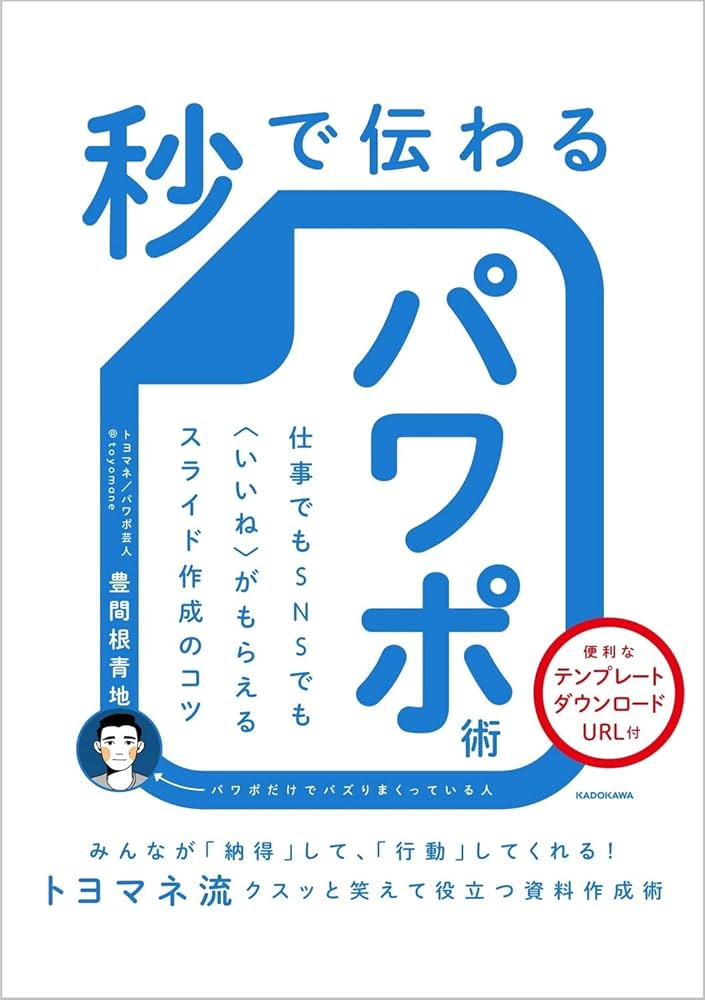

登壇者

豊間根 青地
うねり株式会社代表取締役
1994年東京都生まれ、東京大学工学部卒。サントリーで通販事業のCRM・広告などを担当する傍ら、趣味のPowerPointで作成したネタ投稿がSNSで反響を呼び、「パワポ芸人」として12万人以上のフォロワーを集める。2022年に独立し、AI時代の思考法を研修やコンテンツ制作を通じて提供し、人を育て組織を動かす会社「うねり株式会社（旧：シリョサク）」を創業。
著書：『秒で伝わるパワポ術』（KADOKAWA）
藤田 拳
株式会社ピネアル CTO
2017年東京大学工学部卒業、2019年東京大学大学院新領域創成科学研究科修了。新卒でAGC株式会社に入社し、機械学習を応用した次世代デバイスの研究開発に従事。その後、株式会社ピネアルに参画し、CTOとして生成AI事業を立ち上げる。マーケティング領域における生成系AIを組み合わせたシステムを多数開発し、大手メーカーから官公庁まで幅広いクライアントのDX・AI活用の教育・導入支援をリードしている。
著書：『マーケ領域で実践されている生成系AIの技術』